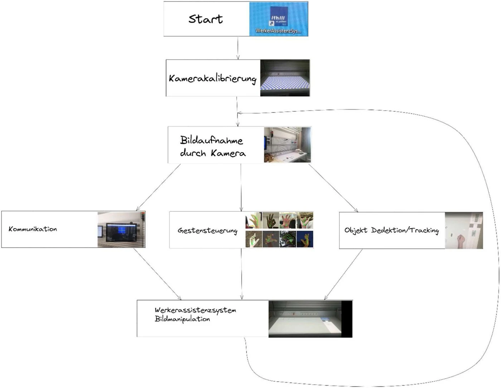
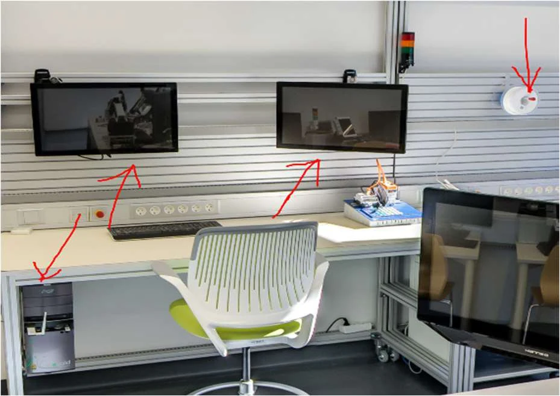
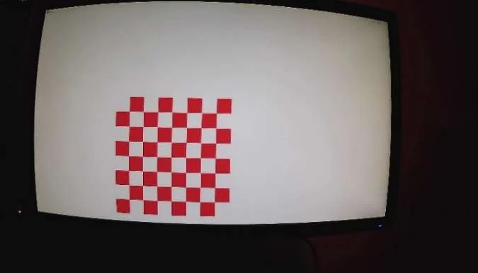
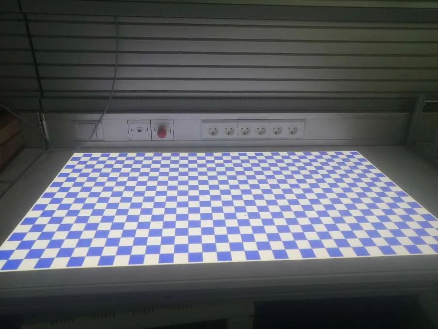
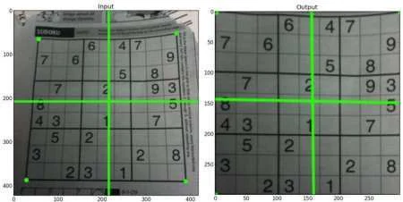
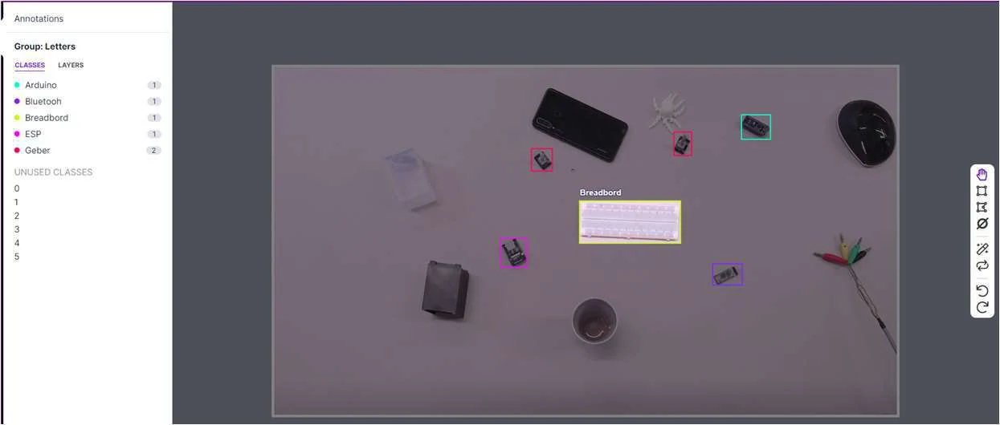
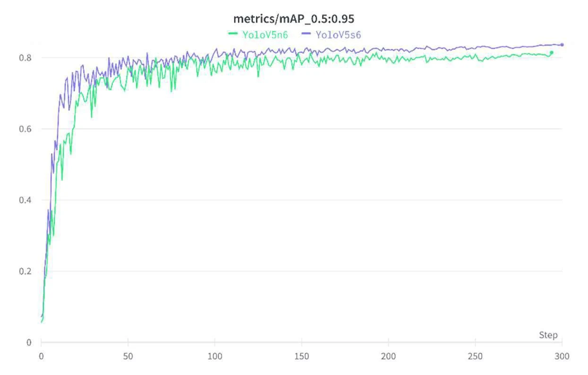
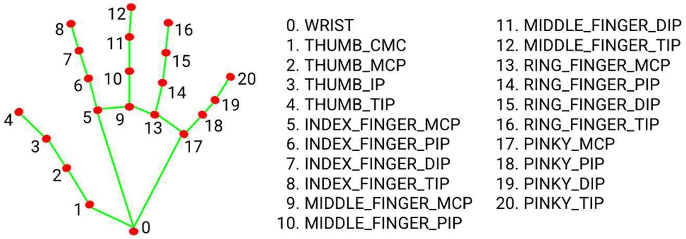
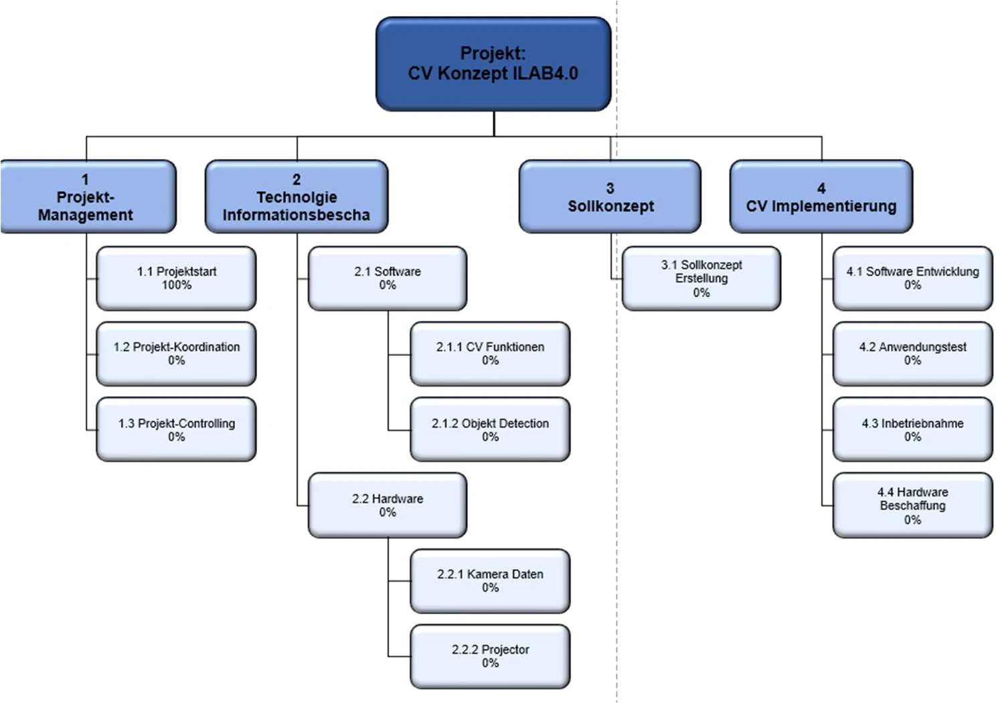
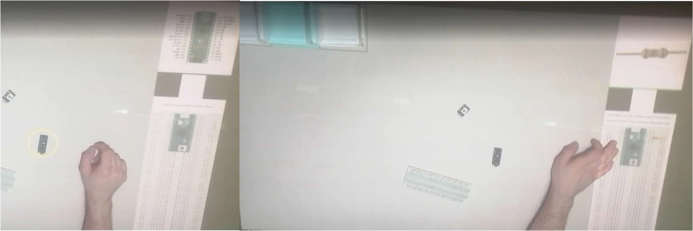

Herausforderung & Problemstellung
Im Industrie 4.0 Lab sollten die Möglichkeiten von Computer Vision möglichst anschaulich demonstriert werden. Die Idee: ein Assistenzsystem, das eine Person durch eine Baugruppenmontage begleitet. Eine Kamera analysiert den Arbeitsplatz, ein Projektor blendet Arbeitsschritte, Bauteilinformationen und farbige Markierungen direkt auf der Arbeitsfläche ein.
Das Feedback sollte drei Dinge zeigen: den aktuellen Arbeitsschritt, das dafür verwendete Bauteil und eine optische Markierung der im Schritt benötigten Materialien. Für die Kontrolle von außen war ein Dashboard vorgesehen, über das sich der Montageablauf auch fernsteuern lässt.
Der ursprüngliche Vorschlag sah zwei Arbeitsbereiche vor, um das Computer-Vision-Konzept und den im Labor vorhandenen Roboter zu einer gemeinsamen Montagelinie zu verbinden. Die Anbindung des Dobot-Roboters wurde im Projektverlauf verworfen: die Entwicklung des Kamera-Projektor-Kalibrierungsmoduls dauerte deutlich länger als geplant, und die daraus entstandene Verzögerung ließ den zweiten Arbeitsbereich nicht mehr zu.
Lösungsansatz
Aufgebaut wurde ein Montagebereich, in dem ein Projektor die Arbeitsfläche bespielt und eine Kamera denselben Bereich auswertet. Die benötigten Bauteile werden per Objektdetektion klassifiziert, farblich markiert und indexiert. Eine Gestensteuerung erlaubt die Bedienung direkt am Arbeitsplatz, ohne Tastatur oder Maus; ein Node-RED-Dienst öffnet denselben Ablauf für die Steuerung von außen und gibt den aktuellen Montagestatus aus.

Hardware & Auslegung
Ausgangspunkt der Beschaffung war die Frage, welche Kamera den Arbeitsplatz vollständig erfasst. Dazu wurde der Laborarbeitsplatz vermessen und die erforderliche Brennweite über den Zusammenhang zwischen maximaler Objektgröße G, Bildsensorgröße B, Objektabstand g und Brennweite f bestimmt:
G = B · (g / f − 1)
- Brennweitenbereich: 5 – 50 mm
- Sensorgröße: 1/2,5″, also rund 5,7 mm
- Montageabstand: 1000 mm über der Arbeitsfläche
- Ergebnis: eine maximal erfassbare Objektgröße von rund 1134 mm, genug, um die gesamte Arbeitsfläche abzudecken
Für die Beschaffung wurden sechs Hersteller angefragt: Basler, Baumer, Sick, Cognex, Keyence und Balluff. Baumer und Basler erwiesen sich als am interessantesten, weil sie fertige Bibliotheken mitbringen, die sich direkt einbinden lassen (neoAPI beziehungsweise pylon). Grundsätzlich kommt jede Kamera in Frage, die den GenICam-Standard unterstützt und sich über die Harvesters-API ansprechen lässt, vorausgesetzt, der Hersteller gibt die nötigen Konfigurationsdateien frei. Als Projektor diente der am Laborplatz vorhandene Optoma ML750ST mit einer Auflösung von 1280 × 800 Pixeln.

Kamera-Projektor-Kalibrierung
Die größte Herausforderung war, Kamera und Projektor exakt aufeinander abzustimmen. Ein erster Ansatz über farbige Markierungen (Blob-Detection) wurde verworfen: er hängt zu stark von Helligkeit, Lichtfarbe und Kamerawinkel ab und erlaubt weder eine genaue Positionsbestimmung noch eine Fehlerkorrektur.
Für den zweiten Anlauf wurden zuerst die Anforderungen festgeschrieben, die eine tragfähige Positionsbestimmung erfüllen muss:
- unabhängig von der Beleuchtungsstärke
- unabhängig von der Lichtfarbe
- automatische Fehlerkorrektur des Arbeitsbereiches
- Fehlerkorrektur der Pixelpositionierung
- Verringerung des Verzerrungseffekts der Kamera
Die Lösung war eine eigene Chessboard-Detection. Die Kameraverzerrung wird über die in OpenCV enthaltenen Funktionen zur Schachbretterkennung und Entzerrung herausgerechnet. Damit das automatisch abläuft, erzeugt eine eigene Funktion ein Schachbrett und lässt es über den Ausgabebildschirm rotieren; die dabei aufgenommenen Bilder liefern die Daten für die Entzerrung. Ergänzend entstand eine Funktion für transparente Einblendungen, die Muster über den Bildschirm legt, ohne den Hintergrund zu verdecken.
Das Schachbrett bleibt auch für die Arbeitsbereichserfassung im Einsatz, weil es gegen wechselnde Lichtverhältnisse robust ist und viele Messpunkte gleichzeitig liefert:
Messpunkte = (Felder horizontal − 1) · (Felder vertikal − 1)
Wie groß die Felder sein sollen, berechnet ein eigener Algorithmus aus Auflösung sowie minimaler und maximaler Feldgröße. Bei 1920 × 1080 Pixeln, abzüglich eines Pixelrahmens zur besseren Bereichserkennung also 1910 × 1070, sucht er zunächst den kleinsten Gesamtpixelfehler. Weil eine gleichmäßige Verteilung der Messpunkte ebenso wichtig ist, wird zusätzlich die Fehlerdifferenz zwischen horizontalen und vertikalen Feldern minimiert; im gezeigten Lauf fällt sie auf null.
Das so erzeugte Schachbrett wird projiziert, von der Kamera wieder aufgenommen und für die Perspektiven-Transformation ausgewertet. Die Eckpunkte werden dabei nicht direkt gemessen, sondern aus den verfügbaren Messpunkten interpoliert, was eine deutlich genauere Abschätzung ergibt. Über einen Binärbildabgleich wird schließlich die verbleibende Pixelverschiebung ermittelt und in X- und Y-Richtung automatisch korrigiert.



Objekterkennung mit YOLOv5
Für die Erkennung der Bauteile fiel die Wahl auf YOLOv5, wegen der einfachen Handhabung, der Detektionsgenauigkeit und vor allem wegen der Geschwindigkeit, die für ein reaktionsfreudiges Assistenzsystem nötig ist. Das Datenset umfasst fünf Klassen: Arduino, Bluetooth-Modul, Breadboard, ESP und Drehgeber.
Als Grundlage dienten rund 100 im Labor aufgenommene Bilder, die in Roboflow manuell annotiert wurden. Auf Basis dieses ersten Modells übernahm ein eigens entwickeltes Skript die weitere Annotation vollständig. Dadurch ließ sich die Zahl der Aufnahmen drastisch steigern, und über Bildmanipulation in Roboflow wurde das Datenset noch einmal verdreifacht.
Beim Training steigt die mittlere Durchschnittsgenauigkeit (mAP) auffallend schnell an. Das kann auf ein noch zu kleines Datenset hindeuten. Auch die geringe Metrikabweichung zwischen Trainings- und Validierungsset ist ein Hinweis, denn sie kann auf Overfitting hindeuten. In der Versuchsumgebung reichte die erzielte Genauigkeit für den Prototyp aus; für einen produktiven Einsatz wäre ein größeres und vielfältigeres Datenset der nächste Schritt.
Zur Stabilisierung der erkannten Positionen übernimmt der Tracking-Algorithmus SORT die Objektnachverfolgung. Ergänzt wurde er um eine eigene Glättung, die das „Zittern“ der Rückgabeposition unterdrückt, das aus den Ungenauigkeiten der Detektion entsteht.


Gestensteuerung, Node-RED & Softwarearchitektur
Die Bedienung erfolgt unmittelbar am Arbeitsplatz. Über die Bibliothek MediaPipe wird die Hand erfasst; deren Handmodell liefert 21 Landmarken, aus denen sich die Fingerposition ableiten lässt. In den Arbeitsbereich projizierte virtuelle Buttons werden mit dem Zeigefinger ausgelöst und schalten jeweils einen Arbeitsschritt weiter.
Parallel dazu läuft ein Node-RED-Dienst, den das Python-Programm selbst startet. Er gibt den aktuellen Montagestatus aus und erlaubt die Steuerung der Arbeitsschritte von außen. Die Kommunikation läuft über UDP, der Informationsaustausch im JSON-Format.
Als Programmiersprache wurde Python gewählt, weil es alle benötigten Bibliotheken unterstützt, von OpenCV über YOLOv5 und MediaPipe bis PyTorch, und schnelles Prototyping erlaubt. Damit die Oberfläche trotz der Rechenlast reaktionsfreudig bleibt, nutzt die Anwendung die Mehrkernarchitektur moderner Prozessoren: vier Prozesse laufen auf eigenen physischen CPU-Kernen, nämlich Bildverarbeitung, Kommunikation, Gestensteuerung und Objekterkennung, und tauschen ihre Daten über Pipes aus.

Projektmanagement
Die Arbeitspakete wurden zunächst in einer Mindmap gesammelt und anschließend in einen Projektstrukturplan überführt. Für die zeitliche Planung kam ein Gantt-Diagramm hinzu, das Arbeitszeiträume und Abhängigkeiten sichtbar macht und über das Semester hinweg laufend angepasst wurde. Das ermöglichte die parallele Bearbeitung von Bildmanipulation, Objektdetektion und Kommunikation.
Das Projekttagebuch zeigt den Verlauf von der Ideenfindung am 15. Februar 2022 über die lange Programmierphase bis zur Inbetriebnahme. Eine Zäsur ist der 23. April 2022: an diesem Tag wurde das erste Konzept der Kamerakalibrierung verworfen. An diesem Punkt trat die Chessboard-Detection an die Stelle der Blob-Detection. Die Installation der Kamera und die Inbetriebnahme folgten Anfang Mai, die Fertigstellung am 13. Mai 2022, die Projektvernissage am 14. Juni 2022.

Ergebnis & Mehrwert
Entstanden ist ein funktionsfähiges Werkerassistenzsystem, das in acht Schritten durch den Aufbau einer LED-Steuerung mit Arduino führt:
- Aufgabenbeschreibung
- Breadboard nehmen
- Arduino platzieren
- Widerstand anschließen
- LED anschließen
- Verdrahtung
- Drehgeber anschließen
- Gratulation zur Fertigstellung
Benötigte Bauteile werden erkannt und auf der Arbeitsfläche hervorgehoben, Produktinformationen lassen sich zum jeweiligen Schritt einblenden. Damit vereint der Prototyp mehrere Computer-Vision-Konzepte an einem Platz, nämlich Bildmanipulation, Objekterkennung und Gestensteuerung, und zeigt, wie sich Mixed Reality im produktiven Einsatz nutzen lässt. Der Nutzen liegt in der digitalen Anleitung von Personal und Schulungsteilnehmenden: Die benötigte Information erscheint am Ort des Arbeitsschritts und muss nicht aus einer separaten Dokumentation entnommen werden.
Das System wurde im Mai 2022 einsatzbereit übergeben, bei der Projektvernissage im Juni vorgeführt und anschließend für die Demonstration bei der Langen Nacht der Forschung eingesetzt.

Quellen
Kyr, P. (2022). Computer Vision Konzept [Praxisbericht, Februar bis Juli 2022]. Fachhochschule St. Pölten, Dualer Bachelorstudiengang Smart Engineering of Production Technologies and Processes.
Die Abbildungen dieser Seite stammen aus dem genannten Praxisbericht und tragen dessen Abbildungsnummern. Abbildung 25 bildet das Handmodell aus der MediaPipe-Dokumentation ab und ist deshalb gesondert gekennzeichnet.
Zurück zu den Projekten